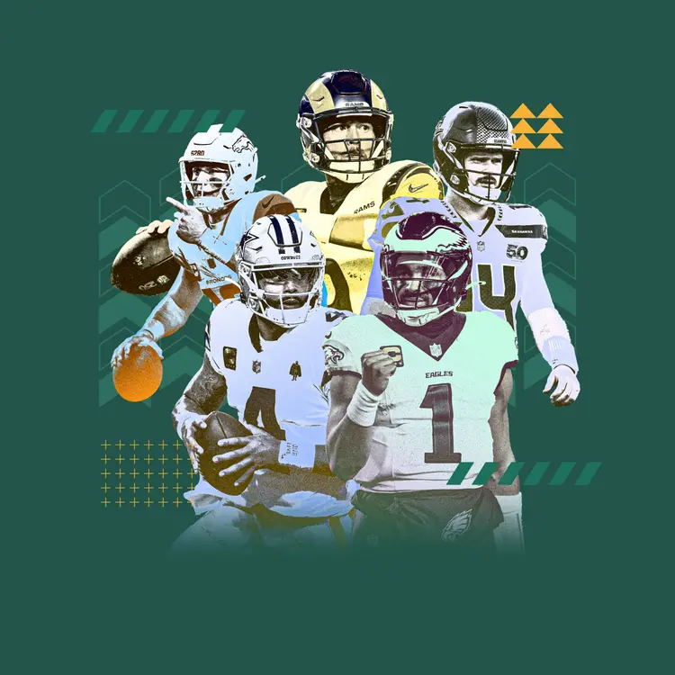
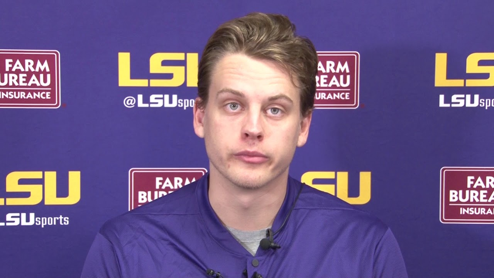
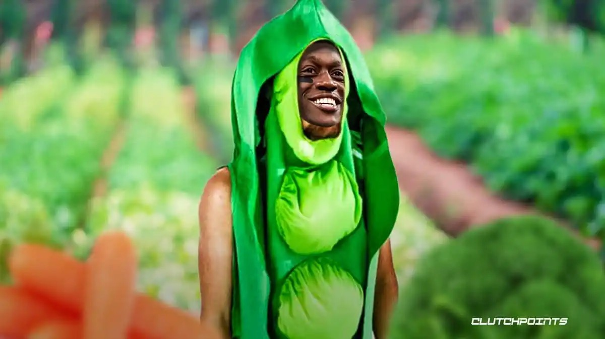
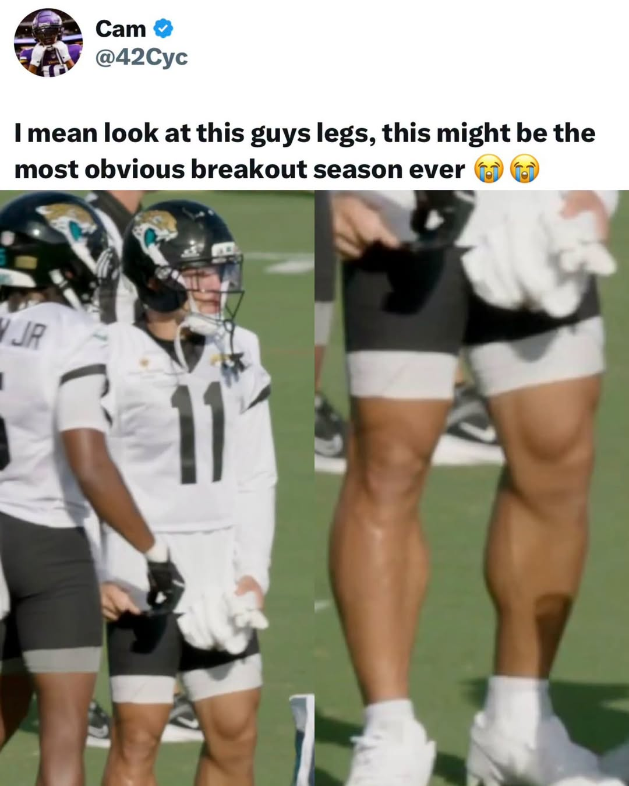
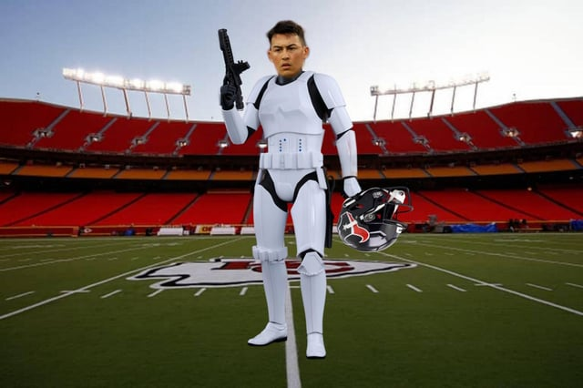
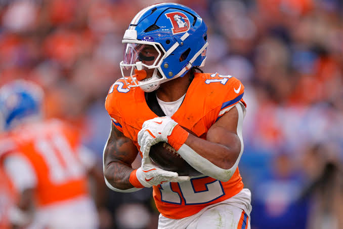
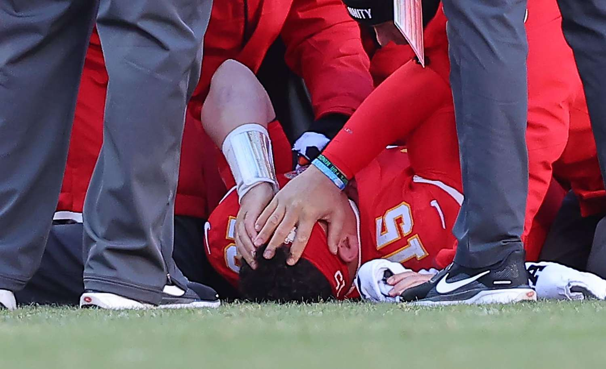
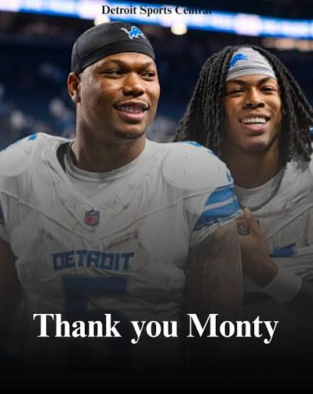
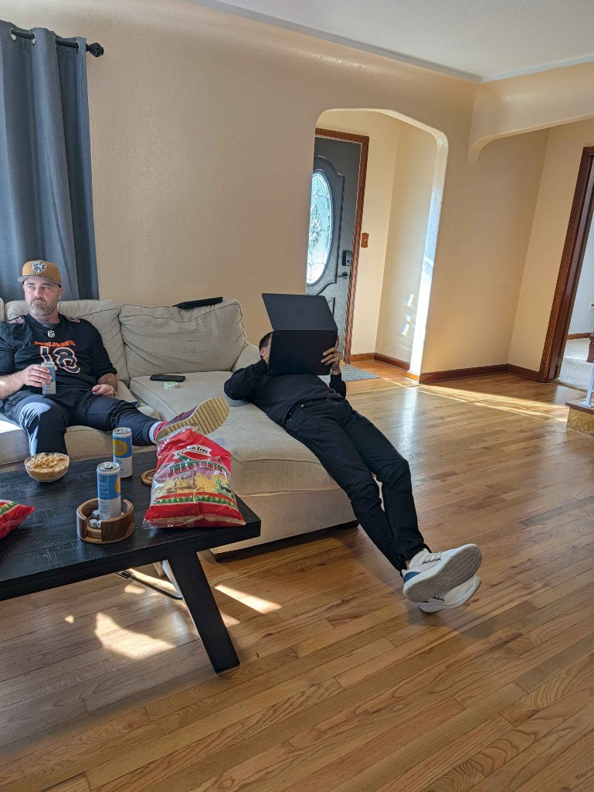

Damn, fellas, here we are again.
It’s the most beautiful day of the year.
All of our teams have an equal shot at a Super Bowl.
Some of us have a shot at a Fantasy Football Championship. (some don’t, lol.)
But most importantly, we’ll get to give each other, and shoot the shit for the upcoming months.
Privileged to do this with you guys again for our tenth year.
Big ups to everyone that made it out to the draft and tuned in. I know the two who couldn’t log in would have loved to, too.
We got a strong crew.
Love you dudes. Best of luck this season.
Draft Grades & Week One Power Rankings

1. Pangy — A+
Current roster
| Starters | |
|---|---|
| QB | Joe Burrow |
| RB | Jaylen Warren |
| RB | Jeremiyah Love |
| WR | Ja’Marr Chase |
| WR | Rashee Rice |
| TE | Colston Loveland |
| FLEX | Tee Higgins |
| D/ST | Minnesota Vikings |
| K | Brandon Aubrey |
| Bench | |
| QB | Dak Prescott |
| RB | Mike Washington |
| WR | Jordan Addison |
| WR | Luther Burden |
| TE | Travis Kelce |
| IR | |
| WR | Jordyn Tyson |
Pangy’s queue/rankings got nuked (really, honestly, sorry), and we laughed when he took Love in the 2nd. Then we laughed when he drafted Higgins, with Chase already on the squad. Then we saw Burrow headed down the pipe right at him, only to see the CPU take him… and we laughed.
Who’s laughing now? Love looks good for week one. Bengals have one of the easiest schedules in the league and Pangy has one of the deepest teams, with Burden, Dak, Addison and the diva Kelce (as backups.) (AND Aubrey.)
The grades: best WR group in the league, second at QB, third at TE and FLEX. Last in RB.
Best case
If the Bears and Bengals roll… it’s over for all of us.
Worst case
Neither of them roll.

2. Seif — A+
Current roster
| Starters | |
|---|---|
| QB | Caleb Williams |
| RB | Kyren Williams |
| RB | Quinshon Judkins |
| WR | A.J. Brown |
| WR | Puka Nacua |
| TE | Brock Bowers |
| FLEX | Zay Flowers |
| D/ST | Los Angeles Rams |
| Bench | |
| RB | Blake Corum |
| RB | MarShawn Lloyd |
| WR | Christian Watson |
| WR | Josh Downs |
| WR | Michael Pittman |
| IR | |
| RB | TreVeyon Henderson |
Seif played it cool at the draft. Two phones, throwing and trying to break one, so cool… taking our money in ceelo. And quietly drafting one of the best teams.
WR and TE are as good as it gets (Brown, Bowers and Puka). Potential upside at RB, but a little questionable.
The grades: best TE and FLEX, upper WRs, lower QB and RBs.
Best case
Bowers bounces back. Christian Watson stays healthy. Puka stays sane.
Worst case
AJ Brown is washed. Puka goes full Antonio Brown. TreVeyon and Quinshon can’t live up to their first year flash.

3. Jake — A
Current roster
| Starters | |
|---|---|
| QB | Bo Nix |
| RB | Derrick Henry |
| RB | Javonte Williams |
| WR | George Pickens |
| WR | Parker Washington |
| TE | Juwan Johnson |
| FLEX | Saquon Barkley |
| D/ST | Philadelphia Eagles |
| Bench | |
| RB | Jonathon Brooks |
| RB | Kenny Gainwell |
| WR | Courtland Sutton |
| WR | Davante Adams |
| WR | Emeka Egbuka |
Did I originally have my team #1, definitely not. Definitely not. I have integrity.
Team chemistry, mix it up…
Uncs: Henry, Barkley, Adams, and Javonte.
Tickeytockies: Egbuka, Parker, Brooks, and Pickens.
The grades: best RB, 2nd FLEX, gambles at QB/TE.
Best case
Egbuka doesn’t have turf toe. Parker Washington is all the hype.
Worst case
Pickens is a clear #2 to a healthy Lamb. Henry is chopped (and Adams, and Saquon).
4. Neil — A
Current roster
| Starters | |
|---|---|
| QB | Josh Allen |
| RB | Bijan Robinson |
| RB | Omarion Hampton |
| WR | DJ Moore |
| WR | Jaylen Waddle |
| TE | Dalton Kincaid |
| FLEX | Rhamondre Stevenson |
| D/ST | Jacksonville Jaguars |
| K | Will Reichard |
| Bench | |
| QB | Jayden Daniels |
| RB | Jacory Croskey-Merritt |
| WR | Quentin Johnston |
| WR | Rome Odunze |
| TE | Kyle Pitts |
He got his fucking man. Pick 2 catered to it perfectly, and when the 2nd round pick came to Neil, Jesus reached down from the heavens to deliver Joshua to his team. There’s only one way it could have happened.
Not only did Josh Allen land on Neil’s squad, but he split that 10, then doubled down on DJ Moore, to get Dalton Kincaid. Lotttss of Bills.
The grades: he got Josh Allen… that’s the #1 QB. Solid at RB, but middle elsewhere.
Best case
Bills win the Super Bowl.
Worst case
Bills don’t win the Super Bowl (normal case tbh).

5. Tony — B
Current roster
| Starters | |
|---|---|
| QB | Justin Herbert |
| RB | Ashton Jeanty |
| RB | D’Andre Swift |
| WR | CeeDee Lamb |
| WR | Tetairoa McMillan |
| TE | Tyler Warren |
| FLEX | J.K. Dobbins |
| D/ST | Baltimore Ravens |
| K | Ka’imi Fairbairn |
| Bench | |
| RB | Jacob Saylors |
| RB | Josh Jacobs |
| WR | KC Concepcion |
| WR | Mike Evans |
| TE | Isaiah Likely |
Definitely the weirdest team. I don’t love any of it, but I at least semi like all of it. Ka’imi Fairbairn is the realest of reals. Jeanty and CeeDee both are primed for better seasons, compared to last. Just some question marks for sure.
The grades: middle at all positions, but FLEX is strong.
Best case
Jeanty can make it to the line of scrimmage before being hit. Jacobs isn’t the next Ray Rice.
Worst case
Lamb — second best DAL WR, Jeanty — line is horrible, Jacobs — suspended forever (and these are just his first three picks…)

6. Kris — B-
Current roster
| Starters | |
|---|---|
| QB | Lamar Jackson |
| RB | Jadarian Price |
| RB | Jahmyr Gibbs |
| WR | Jaxon Smith-Njigba |
| WR | Nico Collins |
| TE | Mark Andrews |
| FLEX | RJ Harvey |
| D/ST | Seattle Seahawks |
| K | Jake Bates |
| Bench | |
| RB | Kyle Monangai |
| WR | Carnell Tate |
| WR | Jayden Reed |
| WR | Stefon Diggs |
| TE | Sam LaPorta |
Kris started the draft fucking cooking. Then it got weird. Big capital on Price, LaPorta, Tate, Seahawks D, RJ Harvey… I could literally type every pick after Lamar and have thought on each.
I am high on Diggs and think RJ is likely a little undervalued, but I just didn’t like much here, despite my raw rankings liking the team still.
The grades: WR is strong AF with JSN and Nico. Lamar still a high floor pick at QB.
Best case
Seahawks roll — Price and JSN gobble the TDss.
Worst case
Injuries plague the plagued… Lamar, Nico, Andrews, Monangai, Reed, Diggs and LaPorta — none of which scream healthy to me.

7. PJ — C+
Current roster
| Starters | |
|---|---|
| QB | Patrick Mahomes |
| RB | Christian McCaffrey |
| RB | James Cook |
| WR | Garrett Wilson |
| WR | Malik Nabers |
| TE | Tucker Kraft |
| FLEX | Travis Etienne |
| D/ST | Houston Texans |
| K | Cameron Dicker |
| Bench | |
| RB | Chris Rodriguez |
| WR | Brian Thomas |
| WR | De’Zhaun Stribling |
| WR | Deebo Samuel |
| WR | Makai Lemon |
Very, very aptly named. Lots of talent on this team, but very risky. This is %1000000 the Ricky Bobby, if you’re not first you’re last team.
I mean, I get it, and I love it. I’m a gambling man. And, I absolutely was looking to grab CMC if he fell to me (second year in a row that CMC went right before my 1st pick).
Nabers off the stankey leg, Mahomes got the Kobe-Germany knee treatment and is back already… his roommate at the clinic, Tucker Kraft.
The grades: RB carrying this team, ironically received my worst QB grade with (the supposed GOAT) Mahomes.
Best case
Very fucking clear — injury luck works out… spoiler for the worst case…
Worst case
[narrator] it didn’t work out.
8. Andy — C+
Current roster
| Starters | |
|---|---|
| QB | Drake Maye |
| RB | Breece Hall |
| RB | Cam Skattebo |
| WR | Drake London |
| WR | Justin Jefferson |
| TE | Harold Fannin |
| FLEX | Jonathan Taylor |
| D/ST | Denver Broncos |
| K | Harrison Mevis |
| Bench | |
| RB | Bhayshul Tuten |
| RB | Chuba Hubbard |
| RB | Woody Marks |
| WR | DK Metcalf |
| TE | George Kittle |
I liked Andy’s team as the CPU was ripping off the picks, but after analysis, wasn’t as thrilled.
I loved JJettas in the second, and London seems like a great snag in the third, but both have huge risks at QB… then the CPU decided Andy didn’t need any depth at depth, with the only other WR drafted being a stuck-with-Rodgers Metcalf. Eek.
The grades: liked Drake Maye at QB and Fannin/Kittle at TE, the rest was okay.
Best case
GTA gets delayed, and JJettas and Kyler hit it (sorry, I know this joke is a little worn out now, lol)
Worst case
Drake London is a zero with the zeroes at QB in ATL. Tuten takes a back seat to Rodriguez, Fannin is a Brown through and through.

9. CJ — C+
Current roster
| Starters | |
|---|---|
| QB | Jalen Hurts |
| RB | David Montgomery |
| RB | Kenneth Walker |
| WR | Amon-Ra St. Brown |
| WR | Chris Olave |
| TE | Trey McBride |
| FLEX | Terry McLaurin |
| D/ST | Los Angeles Chargers |
| K | Jason Myers |
| Bench | |
| QB | Matthew Stafford |
| RB | Jordan Mason |
| WR | Alec Pierce |
| WR | Chris Godwin |
| WR | Michael Wilson |
| IR | |
| RB | Zach Charbonnet |
There are two people in this world that love David Montgomery as much as me… it’s Chris Johnson, and Chris Johnson.
Just like CJ surprised us by coming home to draft in-person on draft day; Montgomery came home to CJ’s cell phone for this season. It was as beautiful as a sunset in some exotic place (use your own mind’s eye for this one. god, think of one god damn thing on your own you meat conduit).
The grades: great at TE. Notes on the rest.
Best case
Chiefs O takes a huge leap and K9 benefits hugely.
Worst case
10. Joel — F
Current roster
| Starters | |
|---|---|
| QB | Trevor Lawrence |
| RB | Bucky Irving |
| RB | Chase Brown |
| WR | DeVonta Smith |
| WR | Ladd McConkey |
| TE | Dallas Goedert |
| FLEX | De’Von Achane |
| D/ST | Tampa Bay Buccaneers |
| K | Cam Little |
| Bench | |
| RB | Rico Dowdle |
| RB | Tony Pollard |
| WR | Jameson Williams |
| WR | Marvin Harrison |
| WR | Wan’Dale Robinson |
Damn, how’d we get here? Joel drove me to Tacoma and back. He was an absolute gentleman. Then he didn’t use any LLM’s for the draft, and perhaps this was the downfall. He only used JOELLM’s.
He proxied his picks as he drifted all ethereal-like in the living room.

The result, a team that AI would kill for. The reality, who fucking knows.
The grades: best was RB coming in at 4th, the rest was ok.
Best case
Really not a need to click into any specific player, there’s plenty of pop potential through the roster…
Worst case
But that will probably be its downfall — upside in a few spots, driven by ADP value, but I don’t see a lock on the roster.
Good luck everyone, except Kris
- Snake 🐍